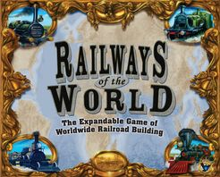
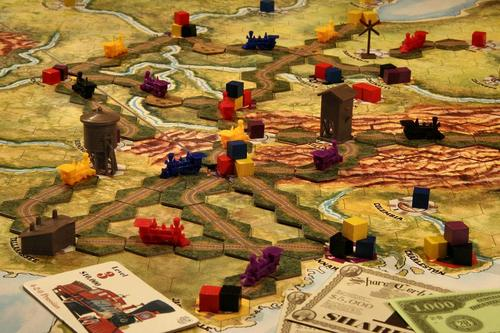
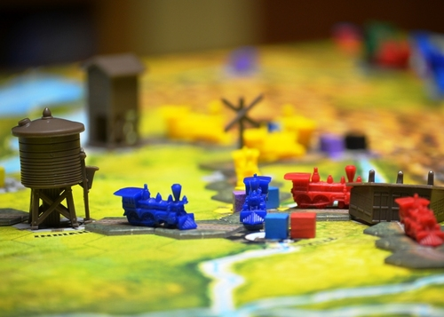

Railways of the World
- Players2-6
- Playing Time:120 Min
- Age:12+
- Weight:3.03
- Designer:Martin Wallace
Gallery
 Description
Railways of the World (2009) is the new edition of the base game for Eagle Games' popular Railways of the World series, first published as Railroad Tycoon in 2005. It reimplements the original game with several improvements.
Revisit the early days of the Age of Steam as you begin with a locomotive (the venerable John Bull, the first locomotive to run in North America) and a vision (your Tycoon "mission" card). From there, build your budding railroad network into a vast empire. Connect New York to Chicago, earn the most money, develop bigger and faster locomotives and maybe even span North America and build the Transcontinental Railway!
Multiple expansions featuring different maps are available. Railways of the World is the new base game for the system and includes the engine placards, railroad tiles, train tokens, money, bonds, and other items that are needed in almost all the Railways of the World series. A gameboard depicting the eastern half of the United States is included in the base game, as well as a mounted map of Mexico.